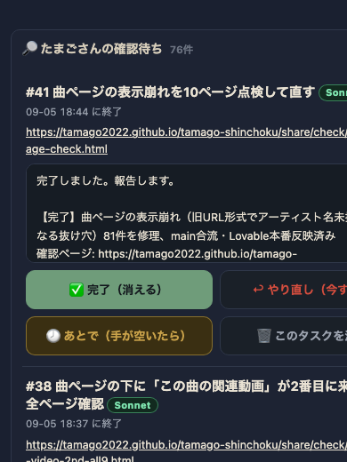
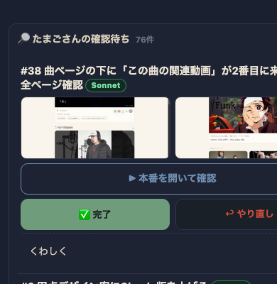

index.html）のrenderCheck()を全面的に書き換えた。確認ページ（/share/check/…）の中の<img>を自動で抜き出し前後2枚のサムネとして表示するfetchCheckPageAssets()と、本番URLの疎通を確かめるcheckUrlReachable()を新設し、証拠の有無でソートする。ボタンは前面に✅完了／↩︎やり直しの2つだけを残し、🕗あとで／🗑消すは<details class="cmore">の中へ移した。文字のフォントサイズ・line-heightには一切手を入れず、画像比率と余白だけを詰めて1行の高さを約360px→約260pxまで縮め、スマホ1画面（844px想定）に3件前後入るようにした。


| 確認項目 | 結果 |
|---|---|
| JS構文エラー | なし（node --checkで確認） |
| 本番(GitHub Pages)への反映 | 反映済み（HTML内に新クラスcthumbsを実測で確認） |
| 実データでの描画（サムネ・本番ボタン・2ボタン・くわしく） | ヘッドレスブラウザで実データ76件を描画し目視確認 |
| 証拠あり行が上、証拠なし行が下 | ソート実装済み・スクショで確認 |
| 証拠なし・URL疎通不可の赤表示 | 実装済み（.cthumbs.none / .curlbtn.dead） |
| 本番URLの404判定 | 同一オリジン（/share/check/配下）は実HTTPステータスで判定できるが、外部の本番URL（他ドメイン）はブラウザのCORS制限で本物の404までは読めず、通信そのものが失敗した場合のみ赤くする形にとどまる（正直な制約として明記） |